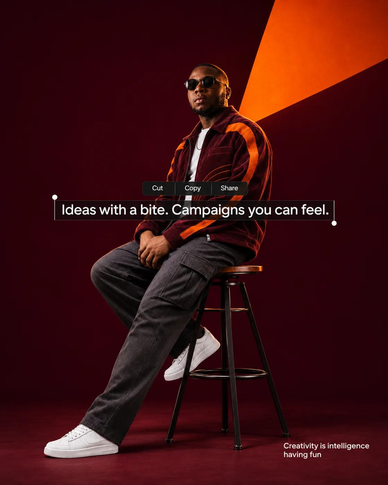
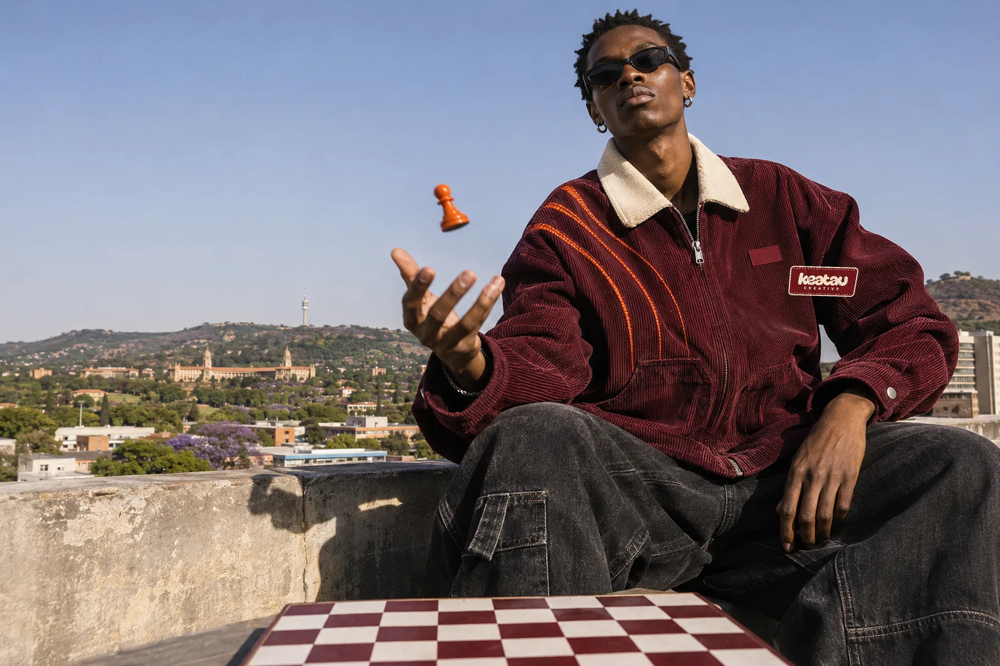
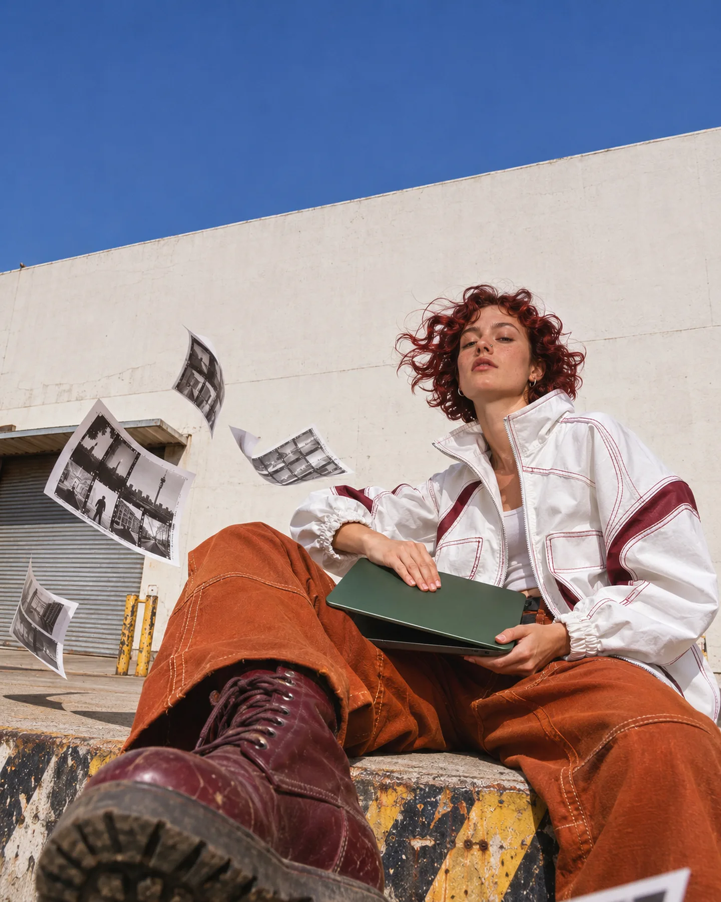
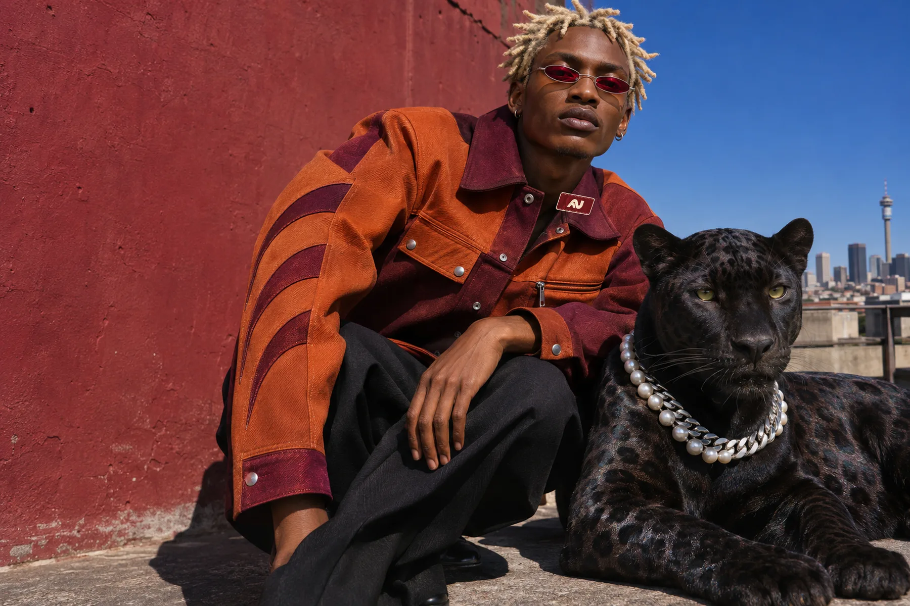

About · Keabetsoe Tau
Some looks
stare back.

I'm Kea and I make things for a living. Sometimes it's a campaign. Sometimes it's a brand. Sometimes it's an idea that starts as a questionable sketch and ends up on a billboard.
I'm a creative director who sits between creativity, strategy, tech and business. Seven plus years of it, across McDonald's, The Glenlivet, ShopX, Pick n Pay, SANBI and a long list of brands that needed an idea with teeth.
KEATAU Creative is the independent practice. Pretoria and Johannesburg shape the locations, the styling and the everyday details in the work.
Send a brief


What I believe
Taste is still
your problem.
Business first
Creative that doesn't move the brand forward is decoration. The idea has to earn its place.
A logo is not the brand
Take the logo away. If the photography, colour, type and tone still say who you are, that's a brand.
Systems, not one-offs
Campaigns should scale across teams and platforms without losing their edge.
Tools help, taste leads
New tools, AI included, make the process faster. Knowing when something just isn't it comes from the person directing it.
Experience
Where the work
was made.
- Oct 2024 to present
Creative Director
AdHive Group - Oct 2021 to Oct 2024
Mid to Senior Multimedia Designer
Flow Communication - Apr 2019 to Jun 2021
Junior to Mid Multimedia Designer
Dieselbrook Brand Consulting - 2016 to 2018
National Diploma: Multimedia
Tshwane University of Technology